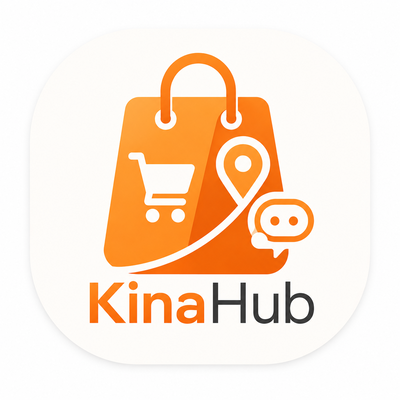
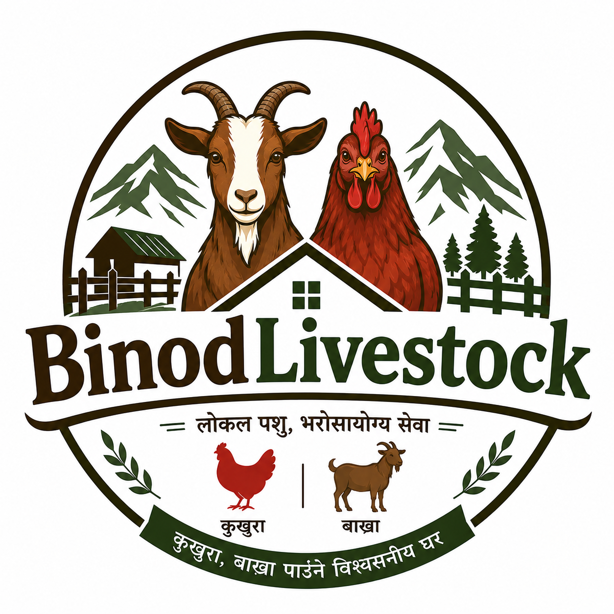
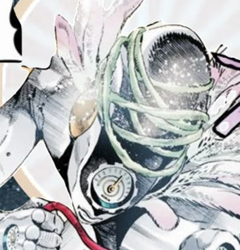
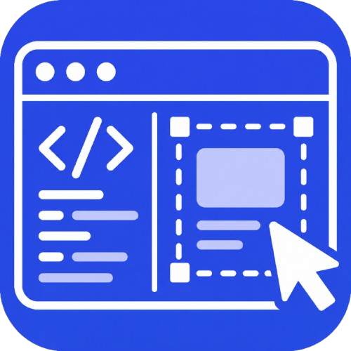
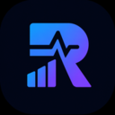
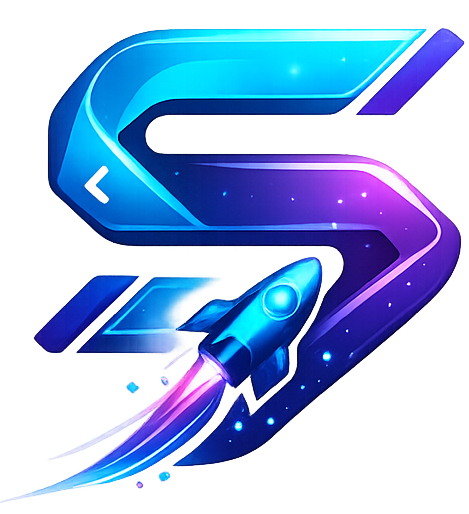

neo@arch:~$ whoami Bikram Gole neo@arch:~$ skills Linux | Python | C++ | Open Source | AI neo@arch:~$ projects > Ytdaily > Hyprland Cava Underlay > KinaHub
Mission Console
Pulse controls and live site state.
Console ready.
Signals launched: 0 Milestones: 5 Warp, 10 Chill, 15 Grid, 20 Matrix.
Project spotlight
Ytdaily
Python-powered YouTube automation engine , monitors channels, downloads in up to 4K with parallel threads, strips sponsors via SponsorBlock, and runs silently as a systemd service.
View repoHyprland Cava Underlay
Hyprland visuals fused with an audio-reactive Cava underlay for a desktop that feels alive.
View repoKinaHub

Location-aware e-commerce platform with an AI shopping assistant (OpenRouter LLM), seller CRM dashboard, smart cart, and advanced filtering , built with React, Django, and PostgreSQL.
BinodLivestock

Full-stack livestock marketplace for buying and selling goats, chickens, and farm animals , built with Next.js, Express, Prisma, and PostgreSQL.
LIVE SITEJillab

Aesthetic personal website for my brother , video background, custom music player, snowfall effects, and a glowing cursor. Pure HTML/CSS/JS, zero frameworks.
LIVE SITERVX-UltraLock
Focus-first YouTube RVX build with UltraLock , block settings access for hours or permanently to kill distractions. Built on ReVanced Extended patches for Android.
View repoSnapcode

Firefox extension for instant visual element inspection , hover any element, click it, and get its HTML, computed CSS, a specific selector, and a screenshot bundled into a Markdown report copied straight to your clipboard.
Get on FirefoxRepoPulse

Real-time GitHub leaderboard and developer analytics dashboard , ranks classmates by contributions, stars, forks, and velocity using live GitHub GraphQL data.
Android 17 Cinnamon Bun
Immersive cinematic showcase for Android 17 “Cinnamon Bun” (API 37) with a fully functional Android simulator in the browser , AI-first platform, adaptive UI, privacy upgrades, and dev migration roadmap.
iPhone: The Engineering Marvel
Interactive deep dive into the iPhone , an immersive 3D showcase built with React Three Fiber, Framer Motion, and Tailwind.
SuperCode

Collaborative online IDE built in one hackathon night , shared rooms, Monaco editing, multi-file projects, live HTML preview, and remote code execution via Piston. Built with React, Vite, TypeScript, Node.js, WebSockets, and Yjs CRDTs for real-time collaboration.
Abyssal Oath
Dark identity site for the Abyssal-oath GitHub organization , a forbidden digital cathedral with Three.js WebGL, procedural Web Audio horror soundscape, live GitHub data, constellation member map, and a hidden sanctum chamber. Zero dependencies, zero build step.
AI Constellation
The people and ideas currently shaping how I think.
YouTube Radar
Feed
The channels that keep my model of tech, AI, Linux, and internet culture sharp.
People I Watch
Operators
I pay attention to builders who shape products, research, and systems at scale.
What I Actually Want
Build Thesis
Useful AI, fast tooling, open systems, and projects that feel good to use every day.
Locked In On
Current Orbit
- Agent-style workflows that save real time
- Terminal UX that feels clean and native
- Making personal branding feel technical, not corporate
Culture + Brain Fuel
Books
Dystopia, grit, ambition, and existential damage.
Movies
Mind-benders, big energy, and pure spectacle.
Games
My rotation is a mix of myth, creativity, and story-heavy chaos.
Anime
Psychological pressure, power systems, and strategic monsters.
Neo Terminal
A real mini shell for the site.
Neo 0ms [arch] Neo | OK | 0ms
╭─ ~/home/neo
Try: help, now, buildlog, projects, repo ytdaily, culture, quote, matrix
Persona Quiz Game
Test if people really know my vibe. Questions are based on my actual persona.
Hit start and prove your Neo-level awareness.
Score: 0/0
Live GitHub
Live repo feed from github.com/BikramGole.
Contribution Graph
Last year of GitHub activity.
Loading contributions…